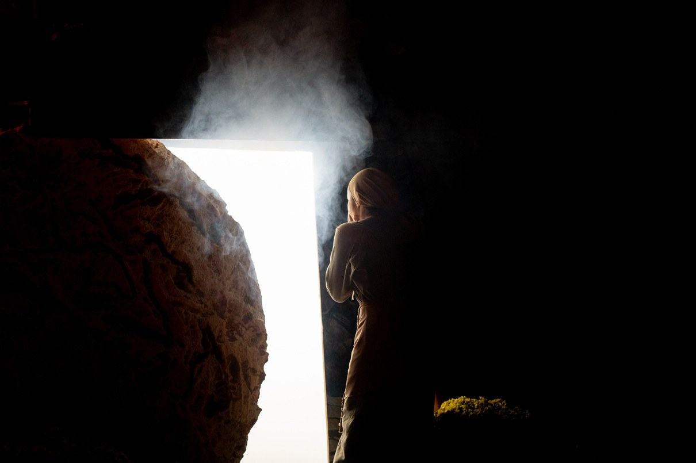
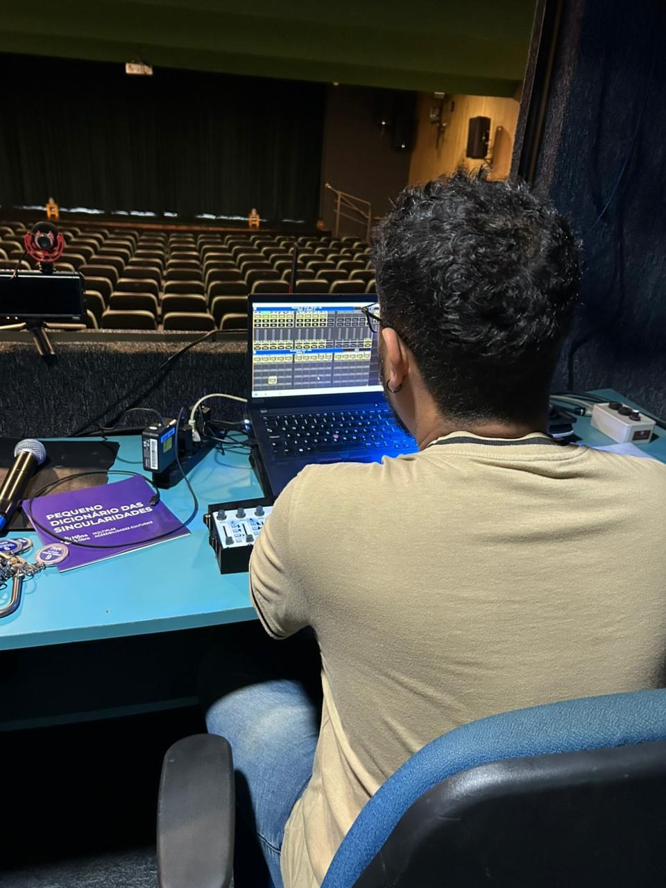

Criação de luz
Atmosferas, cores, sombras e intensidades em diálogo com a proposta artística. Concepção de projetos e visualização 3D.


FERNANDO SANTOS / ILUMINAÇÃO CÊNICA
Criação, técnica e sensibilidade para transformar a cena. Do primeiro desenho de luz ao último instante do espetáculo.
Explore os trabalhos ↓01 / PORTFÓLIO

O olhar por trás da luz.02 / SOBRE MIM
Sou Luiz Fernando Santos Sousa. Minha trajetória artística começou em 2023, na Quadrilha Junina Matutos do Rei, como produtor e técnico. Foi ali que descobri na luz uma forma de criar, sentir e contar histórias.
Minha formação em Iluminação Cênica pelo Sesc MA, em São Luís, e o estágio no Teatro Arthur Azevedo aprofundaram esse encontro entre a criação e a técnica. Hoje, desenvolvo projetos e opero iluminação em diferentes linguagens artísticas.
Em cada trabalho, busco uma luz que converse com a narrativa, valorize os intérpretes e conduza o olhar do público.
Vamos iluminar seu próximo projeto ↗03 / EXPERIÊNCIA E ATUAÇÃO
Atmosferas, cores, sombras e intensidades em diálogo com a proposta artística. Concepção de projetos e visualização 3D.
Posicionamento, afinamento e operação dos equipamentos. Programação de consoles Avolite Pearl 2010 e MA2.
Adaptação de mapas de luz, acompanhamento de ensaios e atendimento técnico a grupos e festivais.
Início da atuação artística na Quadrilha Junina Matutos do Rei.
Iluminação Cênica pelo Sesc MA, com Abel Lopes. Estágio no Teatro Arthur Azevedo.
Técnico iluminador do Teatro Seis de Junho, com atuação no planejamento, instalação, manutenção e operação.
Concepção 3D, acompanhamento de montagem e operação de luz na Paixão de Cristo em Carolina.
04 / CONTATO
Conte sua ideia. Vamos conversar sobre a iluminação do seu espetáculo, produção ou festival.
Conversar pelo WhatsApp ↗